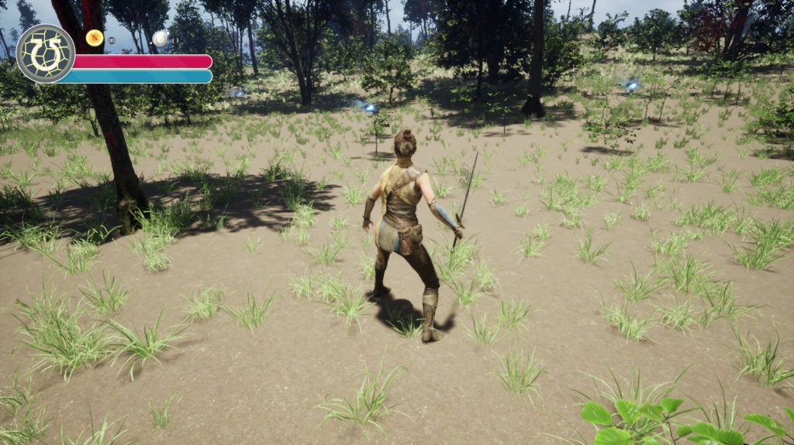
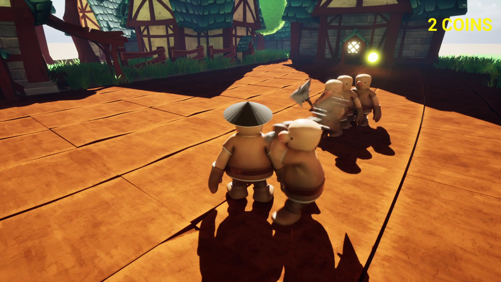

Games & Mechanics
A showcase of playable games, combat systems, enemy AI, and gameplay mechanics built with Unreal Engine 5 C++ and Blueprints. Choose any project below to explore its architecture, mechanics breakdown, and gameplay clips.

UNREAL ENGINE 5 • C++
Unreal Engine 5 Action RPG game
A third-person action RPG built in Unreal Engine 5 with C++, focusing on responsive combat mechanics, attribute progression, and enemy behaviors.

UNREAL ENGINE 5 • BLUEPRINTS
UE 5 Blueprint - Coin Collector
Collect coins and dash past axe-wielding enemies, built with Blueprints.